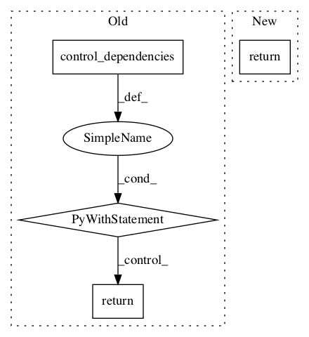

1a433b9140cc4824ec50f13e3295a5cfcf046c27,onnx_tf/handlers/backend/gather.py,Gather,version_11,#Any#Any#,19

Before Change
axis = attrs.get("axis", 0)
result = cls.chk_idx_out_of_bounds_along_axis(x, axis, indices)
msg = "Gather indices are out of bounds, please double check the indices and retry."
with tf.control_dependencies([tf.compat.v1.assert_equal(result, True, message=msg)]):
indices = cls.process_neg_idx_along_axis(x, axis, indices)
attrs["axis"] = axis
return [cls.make_tensor_from_onnx_node(node, attrs=attrs, inputs=[x, indices], **kwargs)]
After Change
@classmethod
def version_11(cls, node, **kwargs):
return cls._common(node, **kwargs)
@classmethod
def version_13(cls, node, **kwargs):
return cls._common(node, **kwargs)
In pattern: SUPERPATTERN
Frequency: 4
Non-data size: 4
Instances
Project Name: onnx/onnx-tensorflow
Commit Name: 1a433b9140cc4824ec50f13e3295a5cfcf046c27
Time:
Author: null
File Name: onnx_tf/handlers/backend/gather.py
Class Name: Gather
Method Name: version_11
Project Name: tensorflow/agents
Commit Name: 9a177951e4f5dc305beee3fe6b12123c34fbe471
Time:
Author: null
File Name: tf_agents/policies/tf_py_policy.py
Class Name: TFPyPolicy
Method Name: _action
Project Name: NeuromorphicProcessorProject/snn_toolbox
Commit Name: f7cd20b56dd5b290ddfa1dc9a17d516b112a0baf
Time:
Author: null
File Name: snntoolbox/simulation/backends/inisim/temporal_pattern.py
Class Name: SpikeAveragePooling2D
Method Name: call
Project Name: NeuromorphicProcessorProject/snn_toolbox
Commit Name: f7cd20b56dd5b290ddfa1dc9a17d516b112a0baf
Time:
Author: null
File Name: snntoolbox/simulation/backends/inisim/temporal_pattern.py
Class Name: SpikeMaxPooling2D
Method Name: call